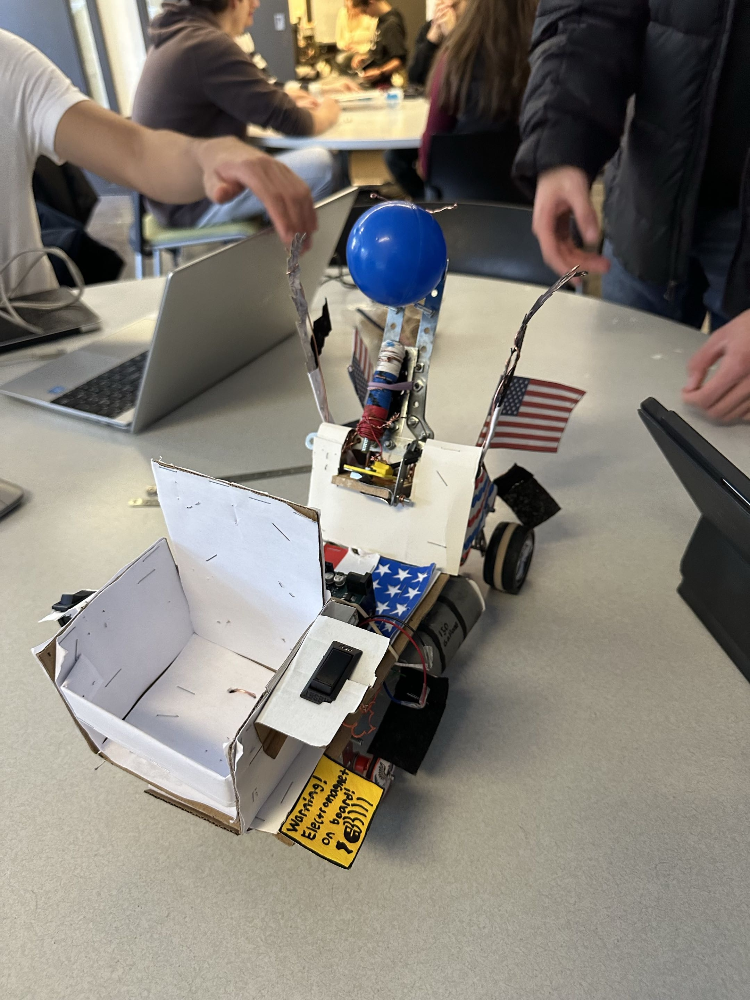
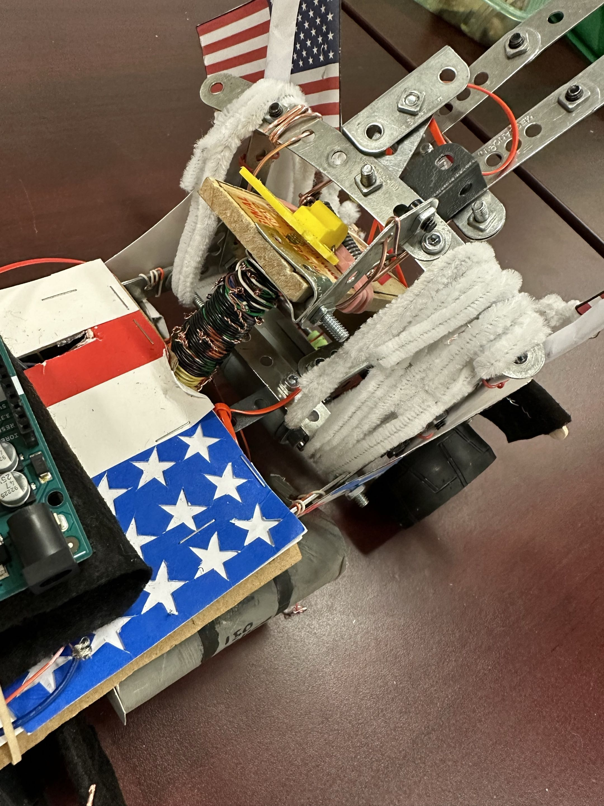

Engineering Projects & Leadership
Environmental Research Assistant
Real-time data collection and analysis of Waterborne Pathogens (Surveillance, Prediction, and Mitigation).
- IoT sensor networks are currently installed in multiple local stormwater systems.
- Sensor fabrication, assembly, on-site installation, and sensor maintenance.
- Analysis, problem-solving, and monitoring for data abnormalities.
Robotics Mechanical Design & Manufacturing Engineer
Co-led structural manufacturing team under aggressive timelines to build intricate, large-scale mobile robots compliant with precise competitive technical rulebooks.
- Utilized SolidWorks, AutoCAD, and Blender to blueprint structures down to high structural tolerance (1/1000th of an inch).
- Executed manual and automated machining, structural welding, circuit wiring, and custom 3D printing.
- Integrated Java, Python, and C++ codebases for full mobile platform control and remote-control stability.
- Secured top 3 in multiple engineering competitions.
- Designed PCB boards and soldered components.
- Led a team in highschool First Robotics and current member in university robotics clubs.
Home Theatre
Created a backyard home theatre with many self-designed and manufactured functionalities.


- Modified gazebo with custom self-designed moveable projector ceiling mount.
- Customized speaker system, karaoke, and entertainment systems with attachments to minimize sound leakage.
- Modded gaming systems from scratch.
Self-Designed 3D models
I design and make 3D printed items for fun, hardware, prototyping, and decorative purposes.
🖼️ Interactive 3D Project Gallery
Step inside a walkable gallery of my SolidWorks-designed parts. Pick pieces up, inspect them up close, snap them together into the full assembly, and download the model files you're carrying.
Enter the Gallery →Autonomous Mobile Device (Engineering Design)
Collaborated in a 5-person engineering team to design, document, and manufacture an autonomous mechanical vehicle capable of negotiating rugged terrain and launching physical targets.


- Integrated a custom Magnetic Projectile Firing mechanism engineered for high targeting accuracy using a bolt, copper wire, and a battery.
- Programmed embedded system layouts and microcontrollers in C++ utilizing Arduinos.
- Achieved the highest overall manufacturing and performance design score out of several hundred competing engineering teams.
Raspberry Pi Digital Voltmeter (Embedded Systems)
Designed and built a real-time digital voltmeter utilizing a Raspberry Pi 4B, an ADS1015 ADC via I²C communication, and a 3-digit 7-segment LED display driven by NPN transistor multiplexing.
- Engineered low-level C code utilizing the
lgpiolibrary to manage I²C read/write operations with an ADS1015 12-bit ADC on the Waveshare SenseHAT module. - Implemented time-division multiplexing above 50 Hz to drive a common-cathode 3-digit 7-segment display without visible flicker.
- Designed NPN transistor switching stages (2N2222) and 320Ω current-limiting resistors to isolate low-power GPIO outputs from high-current LED loads.
- Calibrated and validated accurate continuous DC voltage measurement (0.00V to 3.00V) against a Tektronix MSO2024B Oscilloscope and BK Precision Function Generator.
4-bit 7 Segment Decoder Arithmetic Logic Unit (Digital System Design)
Designed and implemented a 4-bit Arithmetic Logic Unit (ALU which is a sub-circuit in the CPU) using 4 button inputs hierarchical VHDL on a Xilinx Nexys 3 FPGA development board, integrating multi-mode arithmetic/logic selection and a 7-segment output display from scratch.
- Engineered a 4-bit single-stage ALU in VHDL using a modular design approach composed of full adders, B-input logic stages, a 2-to-1 mode multiplexer, and a 7-segment decoder.
- Implemented 16 distinct operations via mode selection line S_2 (Arithmetic vs. Logic) and selection controls S_1, S_0, C_in, including 4-bit addition, subtraction, transfer, bitwise AND, OR, XOR, and 1's complement.
- Simulated and verified system timing using Xilinx ISim testbenches, validating arithmetic calculations, carry-out flags C_out, and boundary conditions across all select modes.
- Mapped User Constraint Files (UCF) to program DIP switches for inputs A and B, pushbuttons for mode selection, and onboard common-cathode 7-segment displays for hexadecimal output visualization on the Nexys 3 FPGA.
Solidworks Design and 3D Modeling
Designed, modeled, and developed various toys for educational and recreational purposes.
- Created detailed exploded views, and linked assemblies.
- Collaborated effectively in a team environment to deliver quality projects on time.
- Used Solidworks for 3D modeling, design, and simulation.
- Recieved a Solidworks Certification officially proving proficiency and practical modeling skills in using SolidWorks 3D CAD software.
DC Motor Closed-Loop Control System (Control Systems)
Designed, simulated, and evaluated P, PD, and PID controllers in MATLAB and on physical hardware to precisely control the position of a DC motor, optimizing dynamic transient response and eliminating steady-state error under step and ramp inputs.
- Modeled continuous open-loop transfer functions for a hardware DC motor and applied Routh-Hurwitz criteria to define closed-loop stability limits.
- Tuned a Proportional (P) controller (K_p = 4.875) to achieve steady-state step response target while maintaining overshoot under 20%.
- Designed a Proportional-Derivative (PD) controller (K_p = 14.52, K_d = 0.241) that eliminated overshoot (%OS = 0) and reduced settling time to 0.047s.
- Developed a PID controller in MATLAB to elevate system dynamics to Type 2, eliminating steady-state error (e_{ss} = 0) during ramp tracking.
Robotics Demo Maze
Created a Robotics Demo Maze for educational purposes. It includes various elements to engage students in learning robotics concepts.
- Coded and created the robotics maze from scratch utilizing C++, Arduino, and other components.
- Highly enjoyed and favoured by students and educators alike in club events.
Self-Designed Computer Build with Custom Components and Casings
Created a fully customized computer case, components, and parts to create a unique build for optimized airflow and performance. Still work in progress.


- Creating a fully customized computer case, componenets, and parts to create a unique build.
- Self Customized and wired Power Supply Unit.
- Custom 3D printed parts to fit and secure components.
Mobile Automated Laser Pointer Device
Independently designed and built a physical tracking/targeting mechanical device operated via a manual joystick configuration.
- Coded device behaviors from scratch using C++ (with a secondary C# version) to achieve 270-degree 3D rotational accuracy.
- Assembled the structural mechanism with a limited custom-parts inventory, executing manual wiring, hardware soldering, and designing a makeshift integrated power cell.